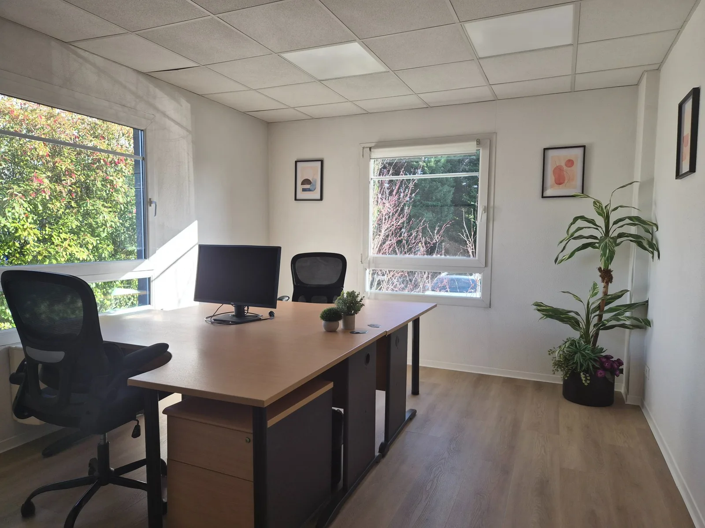
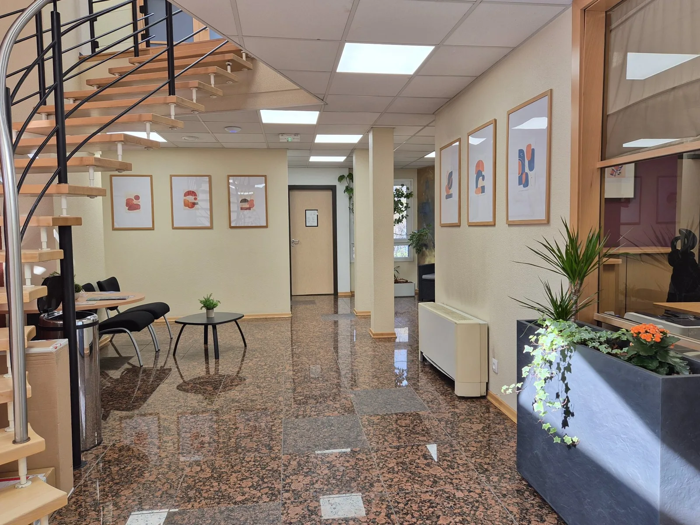

Mis à jour le 20 novembre 2026 · Rédigé par l'équipe Telexal, centre d'affaires à Mundolsheim depuis 1984
En bref
L'Eurométropole de Strasbourg réunit 33 communes et environ 515 000 habitants. Ses bureaux se concentrent dans quelques pôles : le centre et la gare de Strasbourg, le Wacken et son quartier Archipel, l'Espace Européen de l'Entreprise à Schiltigheim, le parc d'innovation d'Illkirch au sud et les zones d'activités de la première couronne nord. En 2025, 158 795 m² de bureaux y étaient immédiatement disponibles (vacance brute de 5 %), mais peu de petites surfaces neuves. Le bon choix dépend d'abord de l'endroit où vivent vos salariés et de la façon dont vos clients viennent vous voir. Au nord, Telexal propose à Mundolsheim des bureaux équipés de 7 à 22 m² à partir de 375 € par mois, dès 1 mois.
Planifier une visiteLes grands pôles de bureaux de l'Eurométropole
| Pôle | Points forts | Points de vigilance |
|---|---|---|
| Centre et gare de Strasbourg | Adresse prestigieuse, desserte tram, train et TGV | Stationnement contraint, peu de bureaux récents ; Arthur Loyd note l'absence d'un vrai quartier d'affaires autour de la gare |
| Wacken, quartier Archipel | Immeubles neufs, proximité des institutions européennes et du Parc des expositions | Offre neuve en cours de livraison jusqu'en 2028, loyers du neuf |
| Espace Européen de l'Entreprise, Schiltigheim | Premier parc tertiaire de l'agglomération, accès A4, bus G vers la gare | Décrit comme saturé, surtout des plateaux en bail 3/6/9 |
| Parc d'innovation, Illkirch-Graffenstaden | Écosystème santé, chimie et numérique, université | Excentré pour les entreprises tournées vers le nord ou l'Allemagne |
| Première couronne nord (Mundolsheim, Zone commerciale Nord) | A4 et A35 à deux minutes, parking gratuit, bureaux équipés au mois | Adresse moins « vitrine » que le centre-ville |
Les six critères qui comptent vraiment
1. Où habitent vos salariés
Un bureau mal placé se paie en recrutements ratés et en départs. Tracez les trajets domicile-travail de votre équipe avant de choisir un quartier. Pensez aussi à la zone à faibles émissions : elle couvre les 33 communes de l'Eurométropole et interdit aujourd'hui les véhicules sans vignette Crit'Air et ceux classés Crit'Air 4 et 5. L'interdiction des Crit'Air 3, prévue au 1er janvier 2027, fait l'objet d'un projet de report d'un an annoncé par la métropole le 8 octobre 2026.
2. Comment vos clients viennent vous voir
Si vos visiteurs arrivent en voiture, un parking gratuit à proximité de l'autoroute vaut souvent mieux qu'une belle adresse sans stationnement. S'ils arrivent en train, la proximité d'une gare ou d'une ligne de tram prime.
3. La durée d'engagement
Un bail commercial engage par périodes de trois ans ; un centre d'affaires permet souvent un engagement au mois. Pour une équipe dont la taille peut changer dans l'année, cette souplesse a une valeur réelle.
4. Le coût complet
Comparez loyer, charges, taxe foncière refacturée, honoraires d'agence, dépôt de garantie, mobilier, internet, ménage et assurance. Un loyer au m² bas peut cacher un coût d'installation élevé.
5. L'image
Certaines activités ont besoin d'une adresse au centre-ville ; beaucoup d'autres, surtout en B2B, gagnent surtout à être faciles d'accès.
6. La capacité à évoluer
Pouvoir prendre un bureau de plus, ou de moins, sans déménager ni changer d'adresse évite des frais et des formalités.
Bail commercial ou centre d'affaires ?
| Critère | Bail commercial classique | Centre d'affaires Telexal |
|---|---|---|
| Durée | 3/6/9 ans, sortie à chaque période triennale avec 6 mois de préavis | Dès 1 mois |
| Coût d'entrée | Dépôt de garantie de 2 à 3 mois et honoraires d'agence (souvent 15 % HT du loyer annuel dans les annonces) | 0 € de frais d'entrée |
| Charges | Refacturées, avec la taxe foncière | Incluses : électricité, chauffage, climatisation, ménage des parties communes |
| Aménagement | À votre charge | Bureau meublé, fibre installée |
| Surfaces | Souvent plus de 100 m² dans les parcs tertiaires | De 7 à 22 m², bureaux voisins possibles |
| Services | Aucun | Accueil, courrier, salles de réunion, permanence téléphonique en option |
Pourquoi regarder la première couronne nord
- L'accès routier : le centre Telexal est à deux minutes de l'A4 (Paris-Strasbourg) et de l'A35, sans traverser Strasbourg.
- Le train : la gare de Mundolsheim, à 8 minutes à pied, relie la gare de Strasbourg en moins de dix minutes.
- Le bus : la ligne CTS 60 relie Mundolsheim à l'Espace Européen de l'Entreprise et au Wacken ; la ligne 75 au centre de Strasbourg.
- Le stationnement : 40 places privées et gratuites, pour l'équipe comme pour les visiteurs.
- L'Allemagne : Kehl à environ 20 minutes, Karlsruhe à environ 45 minutes en voiture.
Telexal en chiffres


Calculer votre itinéraire dans Google Maps · 2 rue Thomas Edison, 67450 Mundolsheim
Ce qu'en disent nos clients
Telexal est noté 4,9/5 sur Google (54 avis en novembre 2026). Quelques avis publiés par nos clients :
★★★★★« Super bureaux pour bosser en toute sérénité ! »
Pierre-Geoffroy Pasturel, Fondateur Liquidy · avis Google
★★★★★« Très bonne expérience avec Telexal ! L'équipe est professionnelle, réactive et à l'écoute ! C'est une entreprise fiable et efficace, avec un vrai sens du service ! »
Tanguy Fischer, Février 2026 · avis Google
Questions fréquentes
33 communes, de Strasbourg à Vendenheim au nord et Illkirch-Graffenstaden au sud, pour environ 515 000 habitants.
Les parcs tertiaires proposent surtout des plateaux de plus de 100 m² en bail commercial. Pour une à quelques personnes, un centre d'affaires est souvent plus adapté : chez Telexal à Mundolsheim, les bureaux équipés font de 7 à 22 m² et démarrent à 375 € par mois.
Oui, la zone à faibles émissions couvre les 33 communes de l'Eurométropole. Elle interdit aujourd'hui les véhicules sans vignette Crit'Air et ceux classés Crit'Air 4 et 5 ; l'interdiction des Crit'Air 3 prévue au 1er janvier 2027 fait l'objet d'un projet de report d'un an.
Oui, en centre d'affaires. Chez Telexal, le contrat démarre à 1 mois d'engagement, sans frais d'entrée, et vous restez aussi longtemps que vous le souhaitez.
En TER jusqu'à la gare de Mundolsheim (moins de 10 minutes depuis Strasbourg), puis 8 minutes à pied, ou en bus CTS (lignes 60 et 75). Consultez le calculateur de la CTS pour l'itinéraire exact.
Oui. Le loyer d'un bureau Telexal comprend l'électricité, le chauffage, la climatisation, la fibre, le mobilier, le ménage des parties communes, le parking et la domiciliation de votre entreprise.
Comparer, c'est d'abord visiter
Venez voir nos bureaux disponibles : la visite est gratuite, sans engagement, et dure environ 30 minutes.
Planifier une visite 03 88 18 37 37 Demander un devisSources
- Eurométropole de Strasbourg, présentation des 33 communes
- Le Journal des Entreprises, immobilier d'entreprise : le Bas-Rhin entre attentisme et recomposition (bilan 2025)
- Arthur Loyd, Solutions d'entreprise Alsace, septembre 2025
- Eurométropole de Strasbourg, ZFE : vers un report de l'interdiction des Crit'Air 3 (8 octobre 2026)
- Eurométropole de Strasbourg, la ZFE-m
- Annonce Bureauxlocaux, 302 m² à l'Espace Européen de l'Entreprise (150 € HT HC/m²/an)
- TER Grand Est, prochains départs en gare de Mundolsheim
- CTS, réseau de bus et tram de l'Eurométropole